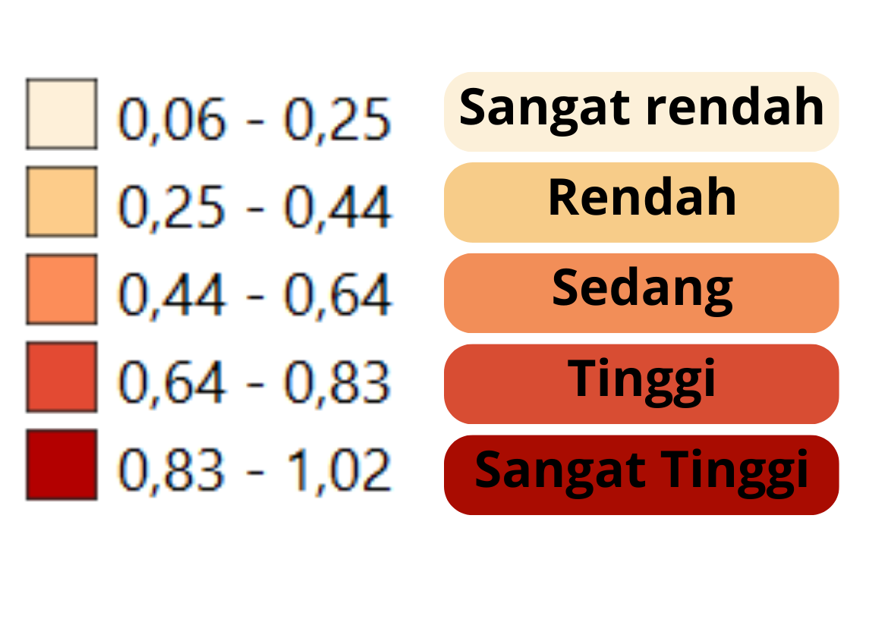

<!DOCTYPE html>
<html lang="en">
  <head>
    <!-- Membantu browser dalam mengidentifikasi aplikasi support dengan mobile device -->
    <meta charset="utf-8">
    <meta name="viewport" content="initial-scale=1,user-scalable=no,maximum-scale=1,width=device-width">
    <meta name="mobile-web-app-capable" content="yes">
    <meta name="apple-mobile-web-app-capable" content="yes">

    <!-- Judul pada tab browser -->
    <title>Indeks Keparahan Kemiskinan Jawa Tengah 2022-Faris-22611042</title>

    <!-- Leaflet CSS Library -->
    <link rel="stylesheet" href="https://unpkg.com/leaflet@1.3.4/dist/leaflet.css">

    <!-- Leaflet JavaScript Library -->
    <script src="http://unpkg.com/leaflet@1.0.2/dist/leaflet.js"></script>

    <!-- Style untuk tampilan peta fullscreen -->
    <style>
        html, body, #map {
        height: 100%;
        width: 100%;
        margin: 0px;
          }
    </style>

    <style>
     table { /*style untuk tabel*/
      font-family: arial, sans-serif;
      border-collapse: collapse;
    }
    td, th {
      border: 1px solid #dddddd;
      text-align: left;
      padding: 8px;
    }
    tr:nth-child(even) {
      background-color: #B6DBEE; //warna tabel
    }
    </style>


  </head>

  <body>
    <!-- Leaflet Jquery, menarik data jquery GeoJSON-->
    <script src="https://code.jquery.com/jquery-2.1.4.min.js"></script>

    <!-- Leaflet JavaScript Library -->
    <script src="https://unpkg.com/leaflet@1.3.4/dist/leaflet.js"></script>
    <!-- unpkg itu adalah librarynya secara online -->


    <!-- HTML Block untuk menampilkan peta -->
    <div id="map"></div>
      <script>
      /* Initial Map */
      //lat, long, zoom (tampilan awal dapat dicari dari google earth)
      var map = L.map('map').setView([-7.338354122249969, 110.38786875930673],9);
      
        
      /* Tile Basemap */
      var basemap1 = L.tileLayer('https://{s}.tile.openstreetmap.org/{z}/{x}/{y}.png', {
      maxZoom: 19,
      attribution: '&copy; <a href="http://www.openstreetmap.org/copyright">OpenStreetMap</a>'
        });


      var basemap2 = L.tileLayer('https://{s}.tile.opentopomap.org/{z}/{x}/{y}.png', {
        maxZoom: 17,
        attribution: 'Map data: &copy; <a href="https://www.openstreetmap.org/copyright">OpenStreetMap</a> contributors, <a href="http://viewfinderpanoramas.org">SRTM</a> | Map style: &copy; <a href="https://opentopomap.org">OpenTopoMap</a> (<a href="https://creativecommons.org/licenses/by-sa/3.0/">CC-BY-SA</a>)'
      });

      var basemap3 = L.tileLayer('https://server.arcgisonline.com/ArcGIS/rest/services/World_Imagery/MapServer/tile/{z}/{y}/{x}', {
      attribution: 'Tiles &copy; Esri &mdash; Source: Esri, i-cubed, USDA, USGS, AEX, GeoEye, Getmapping, Aerogrid, IGN, IGP, UPR-EGP, and the GIS User Community'
      });

      var basemap4 = L.tileLayer('https://tiles.stadiamaps.com/tiles/stamen_watercolor/{z}/{x}/{y}.{ext}', {
  minZoom: 1,
  maxZoom: 16,
  attribution: '&copy; <a href="https://www.stadiamaps.com/" target="_blank">Stadia Maps</a> &copy; <a href="https://www.stamen.com/" target="_blank">Stamen Design</a> &copy; <a href="https://openmaptiles.org/" target="_blank">OpenMapTiles</a> &copy; <a href="https://www.openstreetmap.org/copyright">OpenStreetMap</a> contributors',
  ext: 'jpg'
});

      var basemap5 = L.tileLayer('https://{s}.tile.openstreetmap.fr/hot/{z}/{x}/{y}.png', {
  maxZoom: 19,
  attribution: '&copy; <a href="https://www.openstreetmap.org/copyright">OpenStreetMap</a> contributors, Tiles style by <a href="https://www.hotosm.org/" target="_blank">Humanitarian OpenStreetMap Team</a> hosted by <a href="https://openstreetmap.fr/" target="_blank">OpenStreetMap France</a>'
});

      basemap1.addTo(map); //Memanggil basemap untuk ditampilkan ketika halaman dipanggil

      var marker = L.marker([-7.72616959797108, 109.00954613885679]);
      marker.bindPopup ("<b>Hello ! </b> <br> Saya 22611042_Akhmad Faris Mubarak")
      marker.bindTooltip(" <b> Kantor Bupati Cilacap </b>");
      marker.addTo(map);

      var marker = L.marker([-7.423029111335318, 109.23025520369896]);
      marker.bindPopup ("<b>Hello ! </b> <br> Saya 22611042_Akhmad Faris Mubarak")
      marker.bindTooltip(" <b> Kantor Bupati Banyumas </b>");
      marker.addTo(map);

      var marker = L.marker([-7.387714505935291, 109.36404813508503]);
      marker.bindPopup ("<b>Hello ! </b> <br> Saya 22611042_Akhmad Faris Mubarak")
      marker.bindTooltip(" <b> Kantor Bupati Purbalingga </b>");
      marker.addTo(map);

      var marker = L.marker([-7.396147715096441, 109.6961564681929]);
      marker.bindPopup ("<b>Hello ! </b> <br> Saya 22611042_Akhmad Faris Mubarak")
      marker.bindTooltip(" <b> Kantor Bupati Banjarnegara </b>");
      marker.addTo(map);

      var marker = L.marker([-7.6686327279370525, 109.65364846399723]);
      marker.bindPopup ("<b>Hello ! </b> <br> Saya 22611042_Akhmad Faris Mubarak")
      marker.bindTooltip(" <b> Kantor Bupati Kebumen </b>");
      marker.addTo(map);

      var marker = L.marker([-7.714187233601037, 110.00828782536261]);
      marker.bindPopup ("<b>Hello ! </b> <br> Saya 22611042_Akhmad Faris Mubarak")
      marker.bindTooltip(" <b> Kantor Bupati Purworejo </b>");
      marker.addTo(map);

      var marker = L.marker([-7.358694785614006, 109.90473979837024]);
      marker.bindPopup ("<b>Hello ! </b> <br> Saya 22611042_Akhmad Faris Mubarak")
      marker.bindTooltip(" <b> Kantor Bupati Wonosobo </b>");
      marker.addTo(map);

      var marker = L.marker([-7.5924405684509235, 110.22032741225998]);
      marker.bindPopup ("<b>Hello ! </b> <br> Saya 22611042_Akhmad Faris Mubarak")
      marker.bindTooltip(" <b> Kantor Bupati Magelang </b>");
      marker.addTo(map);

      var marker = L.marker([-7.545917891499136, 110.61051656815236]);
      marker.bindPopup ("<b>Hello ! </b> <br> Saya 22611042_Akhmad Faris Mubarak")
      marker.bindTooltip(" <b> Kantor Bupati Boyolali </b>");
      marker.addTo(map);

      var marker = L.marker([-7.712772650834142, 110.59218603628872]);
      marker.bindPopup ("<b>Hello ! </b> <br> Saya 22611042_Akhmad Faris Mubarak")
      marker.bindTooltip(" <b> Kantor Bupati Klaten </b>");
      marker.addTo(map);

      var marker = L.marker([-7.664371588484764, 110.835982525958]);
      marker.bindPopup ("<b>Hello ! </b> <br> Saya 22611042_Akhmad Faris Mubarak")
      marker.bindTooltip(" <b> Kantor Bupati Sukoharjo </b>");
      marker.addTo(map);

      var marker = L.marker([-7.815445231571837, 110.92581049479004]);
      marker.bindPopup ("<b>Hello ! </b> <br> Saya 22611042_Akhmad Faris Mubarak")
      marker.bindTooltip(" <b> Kantor Bupati Wonogiri </b>");
      marker.addTo(map)

      var marker = L.marker([-7.595845691207628, 110.93988701987786]);
      marker.bindPopup ("<b>Hello ! </b> <br> Saya 22611042_Akhmad Faris Mubarak")
      marker.bindTooltip(" <b> Kantor Bupati Karanganyar </b>");
      marker.addTo(map)

      var marker = L.marker([-7.4264343249679765, 111.02347058124181]);
      marker.bindPopup ("<b>Hello ! </b> <br> Saya 22611042_Akhmad Faris Mubarak")
      marker.bindTooltip(" <b> Kantor Bupati Sragen </b>");
      marker.addTo(map)

       var marker = L.marker([-7.0821875275249315, 110.91737193197125]);
      marker.bindPopup ("<b>Hello ! </b> <br> Saya 22611042_Akhmad Faris Mubarak")
      marker.bindTooltip(" <b> Kantor Bupati Grobogan</b>");
      marker.addTo(map)


      var marker = L.marker([-6.97011671410549, 111.41480356722032]);
      marker.bindPopup ("<b>Hello ! </b> <br> Saya 22611042_Akhmad Faris Mubarak")
      marker.bindTooltip(" <b> Kantor Bupati Blora</b>");
      marker.addTo(map)

      var marker = L.marker([-6.703992753421814, 111.3425006706705]);
      marker.bindPopup ("<b>Hello ! </b> <br> Saya 22611042_Akhmad Faris Mubarak")
      marker.bindTooltip(" <b> Kantor Bupati Rembang</b>");
      marker.addTo(map)

      var marker = L.marker([-6.752601024669951, 111.04008806706824]);
      marker.bindPopup ("<b>Hello ! </b> <br> Saya 22611042_Akhmad Faris Mubarak")
      marker.bindTooltip(" <b> Kantor Bupati Pati</b>");
      marker.addTo(map)

      var marker = L.marker([-6.806723463611801, 110.84212617247066]);
      marker.bindPopup ("<b>Hello ! </b> <br> Saya 22611042_Akhmad Faris Mubarak")
      marker.bindTooltip(" <b> Kantor Bupati Kudus</b>");
      marker.addTo(map)

      var marker = L.marker([-6.590313026985709, 110.66806069875327]);
      marker.bindPopup ("<b>Hello ! </b> <br> Saya 22611042_Akhmad Faris Mubarak")
      marker.bindTooltip(" <b> Kantor Bupati Jepara</b>");
      marker.addTo(map)

      var marker = L.marker([-6.891463322687971, 110.63848798094628]);
      marker.bindPopup ("<b>Hello ! </b> <br> Saya 22611042_Akhmad Faris Mubarak")
      marker.bindTooltip(" <b> Kantor Bupati Demak</b>");
      marker.addTo(map)

      var marker = L.marker([-7.12921129227468, 110.40409310258251]);
      marker.bindPopup ("<b>Hello ! </b> <br> Saya 22611042_Akhmad Faris Mubarak")
      marker.bindTooltip(" <b> Kantor Bupati Semarang</b>");
      marker.addTo(map)

      var marker = L.marker([-7.315550568179722, 110.18188169652254]);
      marker.bindPopup ("<b>Hello ! </b> <br> Saya 22611042_Akhmad Faris Mubarak")
      marker.bindTooltip(" <b> Kantor Bupati Temanggung</b>");
      marker.addTo(map)

      var marker = L.marker([-6.922989412704769, 110.20330330363934]);
      marker.bindPopup ("<b>Hello ! </b> <br> Saya 22611042_Akhmad Faris Mubarak")
      marker.bindTooltip(" <b> Kantor Bupati Kendal</b>");
      marker.addTo(map)

      var marker = L.marker([-6.9108225617207735, 109.72973942596575]);
      marker.bindPopup ("<b>Hello ! </b> <br> Saya 22611042_Akhmad Faris Mubarak")
      marker.bindTooltip(" <b> Kantor Bupati Batang</b>");
      marker.addTo(map)

      var marker = L.marker([-7.025446382628466, 109.59115822596695]);
      marker.bindPopup ("<b>Hello ! </b> <br> Saya 22611042_Akhmad Faris Mubarak")
      marker.bindTooltip(" <b> Kantor Bupati Pekalongan</b>");
      marker.addTo(map)

      var marker = L.marker([-6.892161348573894, 109.38080882234405]);
      marker.bindPopup ("<b>Hello ! </b> <br> Saya 22611042_Akhmad Faris Mubarak")
      marker.bindTooltip(" <b> Kantor Bupati Pemalang</b>");
      marker.addTo(map)

      var marker = L.marker([-6.995771577642601, 109.12789215541457]);
      marker.bindPopup ("<b>Hello ! </b> <br> Saya 22611042_Akhmad Faris Mubarak")
      marker.bindTooltip(" <b> Kantor Bupati Tegal</b>");
      marker.addTo(map)

      var marker = L.marker([-6.870721938543399, 109.03924726706968]);
      marker.bindPopup ("<b>Hello ! </b> <br> Saya 22611042_Akhmad Faris Mubarak")
      marker.bindTooltip(" <b> Kantor Bupati Brebes</b>");
      marker.addTo(map)

      var marker = L.marker([-7.504069069276832, 110.22102887340601]);
      marker.bindPopup ("<b>Hello ! </b> <br> Saya 22611042_Akhmad Faris Mubarak")
      marker.bindTooltip(" <b> Kantor Walikota Magelang</b>");
      marker.addTo(map)

      var marker = L.marker([-7.569561851373504, 110.82933864376456]);
      marker.bindPopup ("<b>Hello ! </b> <br> Saya 22611042_Akhmad Faris Mubarak")
      marker.bindTooltip(" <b> Kantor Walikota Surakarta</b>");
      marker.addTo(map)

      var marker = L.marker([-7.331252228772581, 110.50047044391044]);
      marker.bindPopup ("<b>Hello ! </b> <br> Saya 22611042_Akhmad Faris Mubarak")
      marker.bindTooltip(" <b> Kantor Walikota Salatiga</b>");
      marker.addTo(map)

      var marker = L.marker([-6.982093030693503, 110.4127119965188]);
      marker.bindPopup ("<b>Hello ! </b> <br> Saya 22611042_Akhmad Faris Mubarak")
      marker.bindTooltip(" <b> Kantor Walikota Semarang</b>");
      marker.addTo(map)

      var marker = L.marker([-6.897060221756002, 109.66209833087525]);
      marker.bindPopup ("<b>Hello ! </b> <br> Saya 22611042_Akhmad Faris Mubarak")
      marker.bindTooltip(" <b> Kantor Walikota Pekalongan</b>");
      marker.addTo(map)

      var marker = L.marker([-6.870305264434728, 109.13780288608584]);
      marker.bindPopup ("<b>Hello ! </b> <br> Saya 22611042_Akhmad Faris Mubarak")
      marker.bindTooltip(" <b> Kantor Walikota Tegal</b>");
      marker.addTo(map)

      // marker.openPopup();

      // var customIcon1 = L.icon({
      // iconUrl:'https://www.freeiconspng.com/uploads/maps-car-icon-24.png',
      // iconSize: [20,20],
      // iconAnchor: [22,22],
      // popupAnchor : [-3,-90]
      // });
      // var marker1 = L.marker([-7.9,110.5],{icon: customIcon1});
      // marker1.bindPopup ("<b>Hello ! </b> <br> Saya 22611042_Akhmad Faris Mubarak 2")
      // marker1.addTo(map);


      // var customIcon2 = L.icon({
      // iconUrl:'assets/marker/map-icon.png',
      // iconSize: [20,20],
      // iconAnchor: [22,22],
      // popupAnchor : [-3,-90]
      // });
      // var marker2 = L.marker([-7.7,110.5],{icon: customIcon2});
      // marker2.addTo(map);


    /* GeoJSON Polygon */
          var adminkabupaten = L.geoJson(null, {
            /* Style polygon */
           style: function (feature) {
        if (feature.properties.IKP2022 <= 0.25 ) {
          return {
            opacity: 1,
            color: 'black', //warna garis tepi
            weight: 1.0,
            fillOpacity: 0.7,
            fillColor: '#fef0d9'
          }
        }
        if (feature.properties.IKP2022 > 0.25 && feature.properties.IKP2022 <= 0.44 ) {
          return {
            opacity: 1,
            color: 'black', //warna garis tepi
            weight: 1.0,
            fillOpacity: 0.7,
            fillColor: '#fdcc8a'
          }
        }
        if (feature.properties.IKP2022 > 0.44 && feature.properties.IKP2022 <= 0.64) {
          return {
            opacity: 1,
            color: 'black', //warna garis tepi
            weight: 1.0,
            fillOpacity: 0.7,
            fillColor: '#fc8d59'
          }
        }
        if (feature.properties.IKP2022 > 0.64 && feature.properties.IKP2022 <= 0.83 ) {
          return {
            opacity: 1,
            color: 'black', //warna garis tepi
            weight: 1.0,
            fillOpacity: 0.7,
            fillColor: '#e34a33'
          }
        }
        if (feature.properties.IKP2022 > 0.83) {
          return {
            opacity: 1,
            color: 'black', //warna garis tepi
            weight: 1.0,
            fillOpacity: 0.7,
            fillColor: '#b30000'
          }
        }
      },

      /* Highlight & Popup */
          onEachFeature: function (feature, layer) {
          var content = "<table>" + 
          "<tr><th><b>Kabupaten</b> </th><td>"+feature.properties.kab_kota+"</td> </tr>"+
          "<tr><th><b>Luas</b></th><td>"+feature.properties.Luas +" ha"+"</td> </tr>"+
          "<tr><th><b>url</b></th><td>"+"<a href='"+feature.properties.url+"' target='_blank'> kunjungi website </a>"+"</td> </tr>"+
          "<tr><th><b>Logo</b></th><td>"+""+"</td> </tr>"+
          "<tr><td colspan='2'>"+feature.properties.video+"</td> </tr>"+ //jika videonya mau 2 kolom
          // "<tr><th>Video</th><td>"+feature.properties.video+"</td> </tr>"+ //jika videonya mau 1 kolom
          "</table>"

              layer.on({
                mouseover: function (e) { //Fungsi mouse berada di atas obyek
                  var layer = e.target; //variabel layer
                  layer.setStyle({ //Highlight style
                  weight: 2, //Tebal garis tepi polygon
                color: "#00FFFF", //Warna garis tepi polygon
                opacity: 1, //Transparansi garis tepi polygon
                fillColor: "yellow", //Warna tengah polygon
                fillOpacity: 1, //Transparansi tengah polygon
              });
            },
            mouseout: function (e) { //Fungsi mouse keluar dari area di atas obyek
              adminkabupaten.resetStyle(e.target); //Mengembalikan style garis ke style awalnya
              // map.closePopup(); //Menutup popup
            },
            click: function (e) { //Fungsi ketika obyek di-klik
              adminkabupaten.bindPopup(content); //Popup
            }
          });

        }
      });

      /* memanggil data geojson polyline */
      $.getJSON("data/IKP2022_JATENG.geojson", function (data) {
        adminkabupaten.addData(data);
        map.addLayer(adminkabupaten); //adminkabupaten ditampilkan ketika halaman dipanggil
      });

      /*Control Layer*/
      var baseMaps = {
      /*yang kuning adalah nama yang muncul, yang putih adalah nama variabel*/
      'Open Street Map':basemap1,
      'Open Topo Map': basemap2,
      'Esri WorldImagery': basemap3,
      'Stadia_StamenWatercolor': basemap4,
      'OpenStreetMap_HOT': basemap5,
      };

    var Layers = {
      'Indeks Keparahan Kemiskinan <br> ': adminkabupaten,
                };

    var layerControl = L.control.layers(baseMaps, Layers, {collapsed:false});
    layerControl.addTo(map);

      L.Control.Watermark = L.Control.extend({
          onAdd: function(map) {
              var text = L.DomUtil.create('div');
              text.innerHTML = '22611042 - Akhmad Faris Mubarak'; /* Teks yang ingin digunakan sebagai watermark */
              text.style.fontSize = '18px'; /* Ukuran font teks */
              text.style.fontFamily = 'Arial, sans-serif'; /* Jenis font teks */
              text.style.color = 'rgba(255, 255, 255, 0.8)'; /* Warna teks */
              text.style.backgroundColor = 'rgba(0, 0, 0, 0.5)'; /* Warna latar belakang teks dan tingkat transparansi */
              text.style.padding = '8px 12px'; /* Padding teks */
              text.style.borderRadius = '5px'; /* Border radius untuk sudut */
              text.style.margin = '10px'; /* Margin dari tepi peta */

              return text;
          },
          onRemove: function(map) {
              // Nothing to do here
          }
      });

      L.control.watermark = function(opts) {
          return new L.Control.Watermark(opts);
      }

      L.control.watermark({ position: 'topright' }).addTo(map);


      </script>
  </body>
</html>
